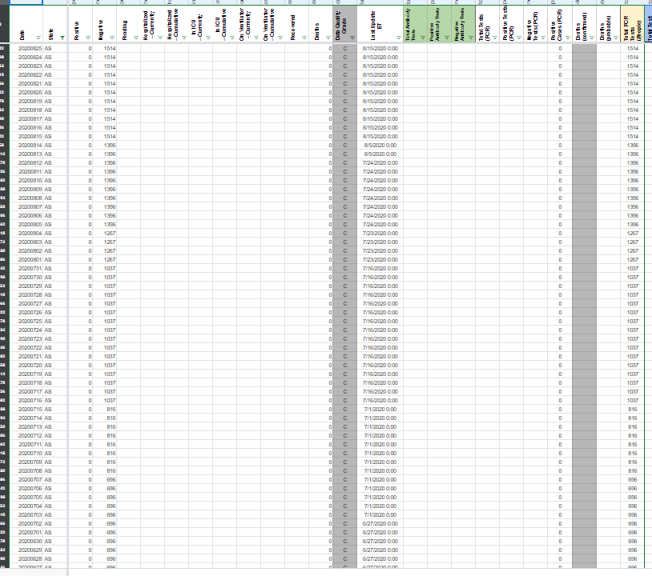
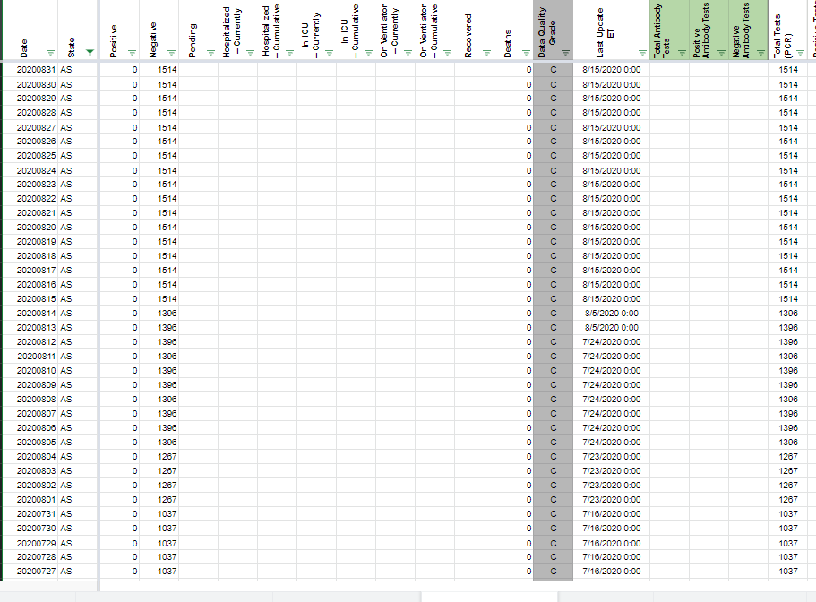

[AS] total tests (PCR) is specimens, but is stored as people
Overview: Tests for American Samoa are going into Total PCR Tests (People), but in fact (according to the annotations sheet) they are specimens.
So we need to:
- update the WS2 instructions to put the testing data for AS into Total Tests (PCR)
- move the data in the data store from Total Tests (PCR) to Total PCR Tests (People)
theomichel added the label Data quality on August 28, 2020 at 6:05 pm
muamichali closed the issue on September 1, 2020 at 8:29 am
Total PCR Tests (People)toTotal Tests (PCR)BEFORE 
AFTER 